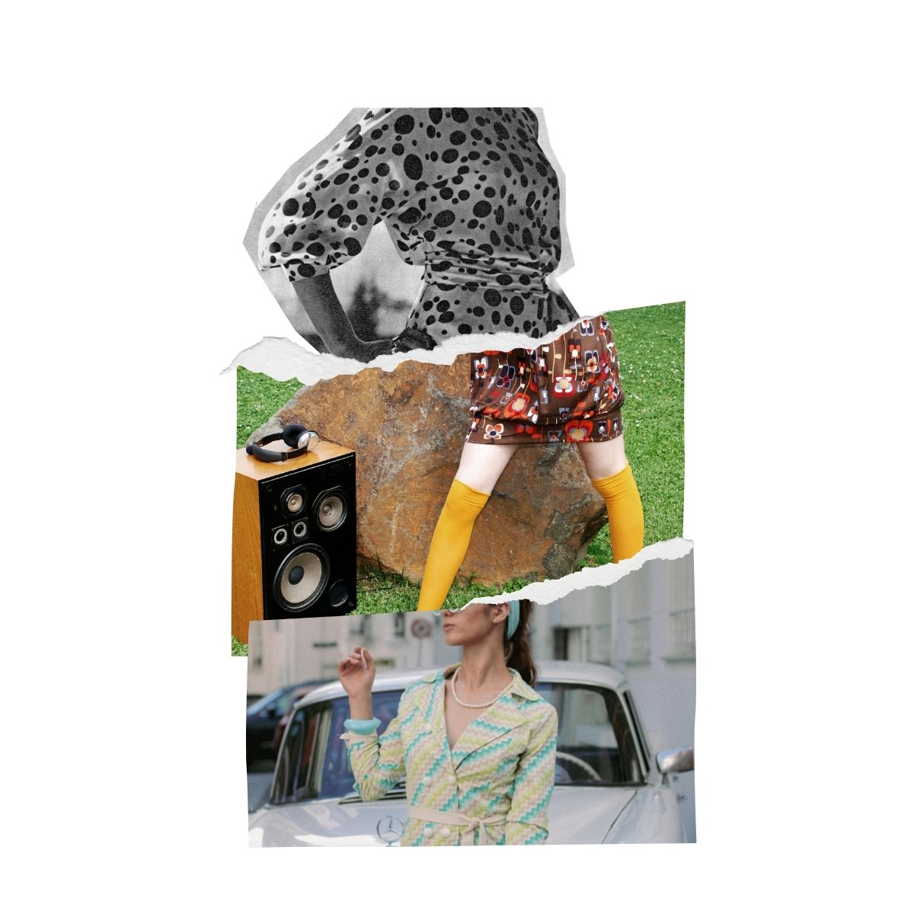
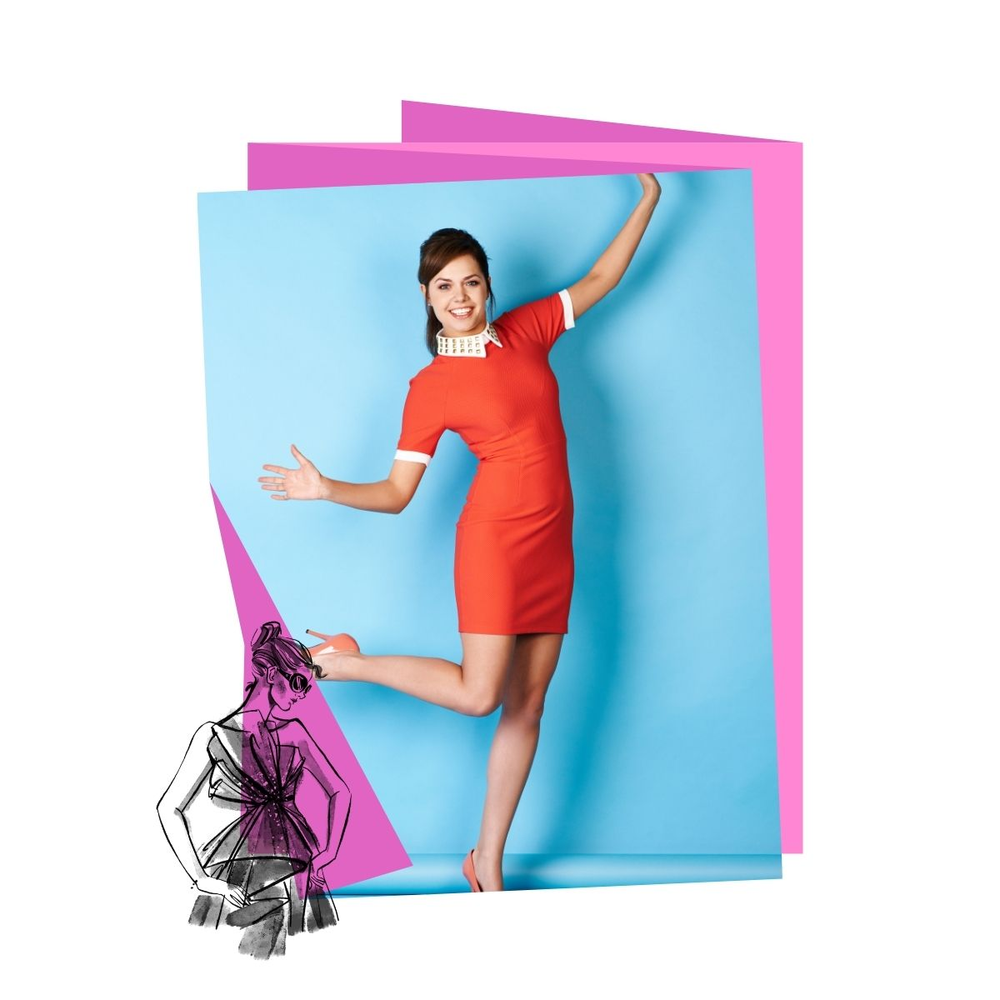

A moda dos anos 1960 foi marcada por estilos modernos e audaciosos, com destaque para vestidos longos, blazers e acessórios ousados.
As cores vibrantes, estampas geométricas e tecidos sintéticos refletiam a cultura jovem e a revolução social da época.

Os homens adotaram um estilo mais casual, com calças justas, camisas coloridas e jaquetas modernas. O visual masculino também refletia a liberdade e a criatividade da década.
Em resumo, a moda dos anos 1960 representava uma era de inovação e expressão pessoal, com roupas que desafiavam as convenções tradicionais.
